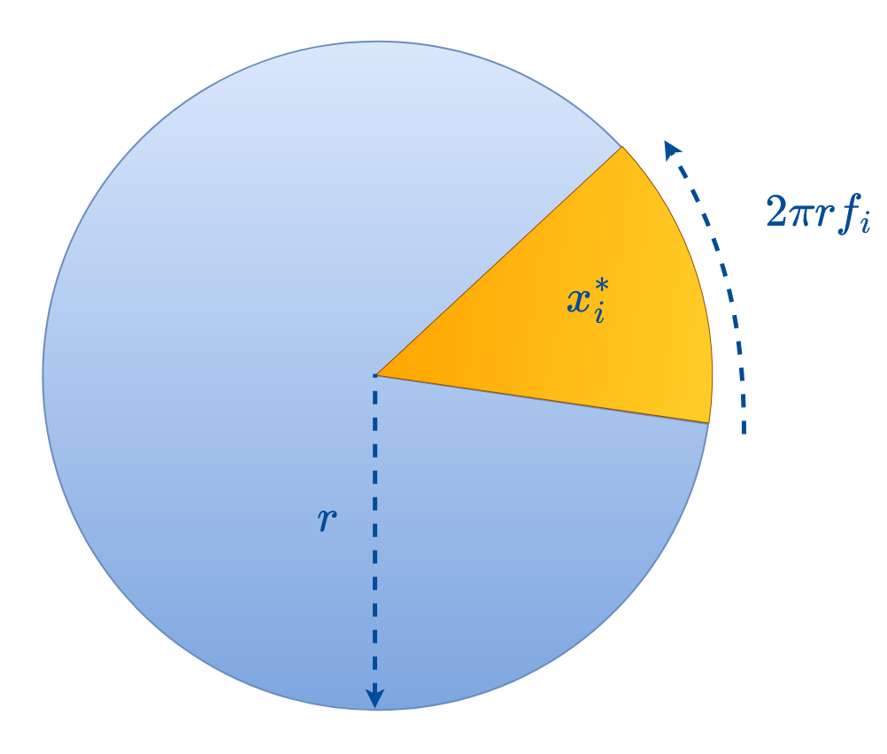
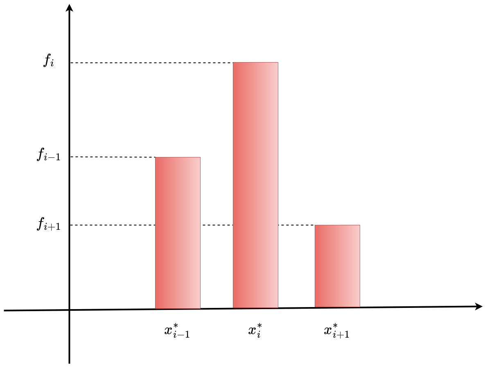
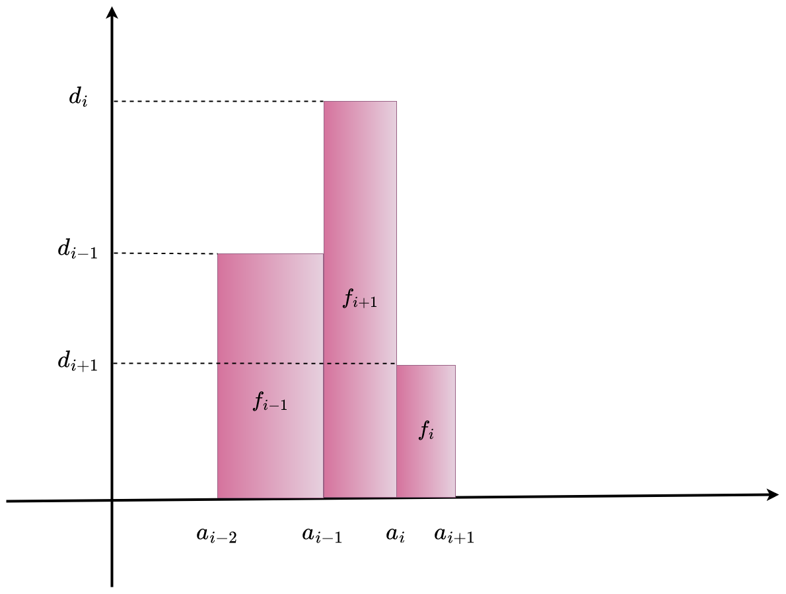
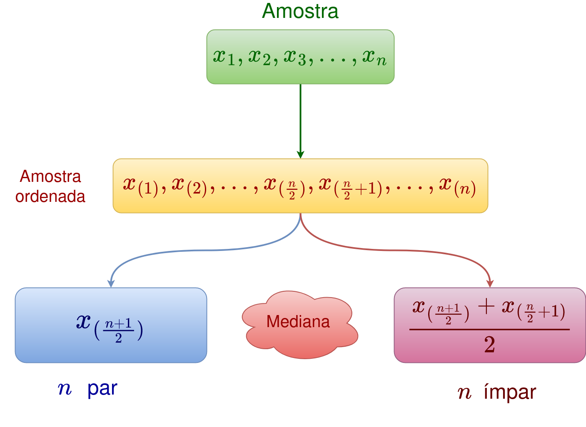

2 Análise descritiva de dados
A Estatística é a ciência dos dados. Fornece os princípios e os métodos para planejar, coletar, classificar, resumir, organizar, analisar e interpretar informações numéricas. O objetivo principal da Estatística é auxiliar a tomada de decisões em situações de incerteza com base em um conjunto de informações quantitativas.
2.1 Conceitos Fundamentais
Definição 2.1 (Dado) Fato e número coletado, analisado e sintetizado para apresentação e interpretação.
Definição 2.2 (Unidade experimental) Elemento (pessoa, objeto, transação, evento, etc.) a respeito do qual se coletam os dados.
Definição 2.3 (População) Conjunto de unidades experimentais que são objeto de estudo.
Definição 2.4 (Amostra) Subconjunto de unidades experimentais da população.
Definição 2.5 (Variável) Característica ou propriedade da unidade experimental. Chama-se assim devido ao fato de que qualquer característica pode variar entre unidades experimentais de uma população.
Definição 2.6 (Medição) Processo usado para atribuir números às variáveis de unidades experimentais distintas. A medição pode ser realizada usando equipamentos específicos, questionários ou contagens.
Definição 2.7 (Observação) Conjunto de medidas obtidas, correspondentes a determinada unidade experimental.
Definição 2.8 (Censo) Processo no qual as variáveis são medidas para cada unidade experimental da população. É vantajoso em situações onde a população é pequena, quando se exige precisão completa e quando se dispõe de toda a informação necessária para atingir os objetivos do estudo.
Definição 2.9 (Pesquisa Amostral ou Amostragem) Processo de realização de uma pesquisa para coletar dados de uma amostra. É vantajosa quando a população é infinita (isto é, muito grande), quando há necessidade de destruir a unidade de observação ou por motivos operacionais, entre outros.
2.2 Técnicas de seleção de amostras aleatórias
Definição 2.10 A amostragem aleatória simples seleciona uma amostra de tamanho \(n\) de forma que TODAS as possíveis amostras de tamanho \(n\) tenham a mesma chance de serem selecionadas.
Definição 2.11 A amostragem aleatória estratificada classifica a população em pelo menos dois grupos ou estratos para selecionar uma amostra de cada um.
Definição 2.12 A amostragem aleatória por conglomerados divide a população em grupos ou setores, selecionam-se aleatoriamente alguns desses grupos e todos os elementos dos mesmos são observados.
2.3 Áreas da Estatística
A Estatística divide-se basicamente em:
Estatística Descritiva: É a primeira etapa da análise dos dados. Compreende técnicas para a organização, o resumo e a apresentação das observações. Se utilizada em uma amostra essas técnicas apenas descrevem os dados em questão;
Inferência Estatística: É um conjunto de técnicas que se baseia na teoria de probabilidade para extrapolar as informações de uma amostra para toda a população.
Um estudo estatístico pode ser representado por meio do seguinte esquema:

2.4 Estatística Descritiva
Frequentemente as pesquisas geram grandes quantidades de dados. A Estatística descritiva pode ser usada como uma ferramenta importante para o correto tratamento desses dados, através da qual podem ser obtidas conclusões válidas. É conduzida por meio de duas abordagens:
Representações tabulares e gráficas;
Medidas numéricas.
O tipo de variável sob estudo determina a abordagem a ser usada na análise.
2.4.1 Classificação das variáveis
As variáveis são classificadas de acordo com os valores que assumem. Elas podem ser:
Qualitativas (ou categóricas), se seus valores são categorias, qualidades ou atributos dos indivíduos. Ainda se subdividem em:
Ordinais: quando essas categorias admitem alguma ordenação lógica;
Nominais: quando esses atributos não podem ser ordenados logicamente;
Quantitativas, se seus valores são números, geralmente resultados de contagens ou medições. Ainda se subdividem em:
- Discretas: seus possíveis valores formam um conjunto finito, ou infinito enumerável.
Um conjunto é enumerável se é possível estabelecer uma bijeção entre seus elementos e um subconjunto de \(\mathbb{Z}\);
Um conjunto é enumerável se é possível estabelecer uma bijeção entre seus elementos e um subconjunto de \(\mathbb{Z}\);
- Contínuas: seus possíveis valores formam um conjunto não enumerável.
Esquematicamente:

2.4.2 Representação Tabular
2.4.2.1 Distribuição de frequências
Resumo tabular de dados mostrando o número (frequência absoluta) de elementos em cada uma das diversas classes ou categorias. No caso dos dados quantitativos, é necessário definir intervalos de valores não sobrepostos. Esquematicamente:
[Figura]
2.4.2.1.1 Casos qualitativo e quantitativo discreto (poucas observações diferentes)
Seja \(X\) uma variável. Suponha que \(x_1,x_2,\ldots,x_n\) são observações de \(X\). As observações \(x_1,x_2,\ldots,x_n\) podem ser os valores de \(X\) para a população completa ou apenas uma amostra de \(X\). Agora, considere que:
dos valores \(x_1,x_2,\ldots,x_n\), apenas \(k\leq n\) são diferentes;
o restante são apenas repetições desses valores;
sejam \(x_1^*,x_2^*,\ldots,x_k^*\) as observações diferentes;
suponha que o valor \(x_i^*\) se repetiu \(n_i\) vezes, \(i=1,2,\ldots,k\).
Definição 2.13 (Distribuição de frequências) A distribuição de frequências de \(X\) em \(x_1,x_2,\ldots,x_n\) é dada por
| \(X\) | \(x_1^*\) | \(x_2^*\) | \(x_3^*\) | \(\cdots\) | \(x_{k-1}^*\) | \(x_k^*\) | Total |
|---|---|---|---|---|---|---|---|
| Frequência | \(n_1\) | \(n_2\) | \(n_3\) | \(\cdots\) | \(n_{k-1}\) | \(n_k\) | \(\sum_{i=1}^kn_i=n\) |
Observações
Se \(X\) for ordinal ou discreta, os \(x_i^*\) devem ser dispostos de forma que \[x_1^* < x_2^* < \cdots < x_k^*;\]
A distribuição de frequências fornece um resumo considerável dos dados;
Neste caso, não há perda de informação ao utilizar essa técnica;
A frequência com que os valores de \(X\) ocorrem fica evidente;
Utiliza-se esse tipo de distribuição de frequências no caso discreto quando \(k\ll n\).
Exemplo 2.1 Seja \(X=\) “Tipo de música preferida”. Neste caso \(X\in\{p,r,s\}\), onde p: pagode, r: rock e s: sertanejo. Suponha que \(n=40\) pessoas foram entrevistadas e o valor de \(X\) para cada uma delas foi verificado. Os dados coletados são:
s p p p s p s s r p
s r p s r p s s p p
p s r s s p p p s s
p r s s r s p p p s
Portanto, a distribuição de frequências de \(X\) é dada por
| \(X\) | p | r | s | Total |
|---|---|---|---|---|
| Frequência | \(17\) | \(6\) | \(17\) | \(40\) |
Exemplo 2.2 O RH de uma empresa com \(600\) funcionários deseja fazer um levantamento com respeito à escolaridade (E) e número de filhos (N) dos mesmos. A variável escolaridade classificada em f (fundamental), m (médio) e s (superior). Uma amostra de \(n = 30\) funcionários forneceu as seguintes observações:
A tabela de frequências para a variável E obtem-se a partir da contagem das unidades observadas em cada categoria da variável, i.e,
| E | f | m | s | Total |
|---|---|---|---|---|
| Frequência | \(12\) | \(8\) | \(10\) | \(30\) |
Análogamente, a distribuição de frequências da variável N é dada por:
| N | 0 | 1 | 2 | 3 | Total |
|---|---|---|---|---|---|
| Frequência | \(2\) | \(11\) | \(12\) | \(5\) | \(30\) |
2.4.2.2 Distribuição de frequências relativas
Constantemente interessa determinar a proporção ou porcentagem de items em cada classe da variável. A frequência relativa de uma classe é igual à fração ou proporção de unidades experimentais que pertencem a uma classe. Particularmente útil quando interessa comparar duas ou mais populações com diferentes tamanhos. Considere o seguinte esquema:

Definição 2.14 (Frequências relativas) Seja \(X\) uma variável com a seguinte distribuição de frequências:
| \(X\) | \(x_1^*\) | \(x_2^*\) | \(x_3^*\) | \(\cdots\) | \(x_{k-1}^*\) | \(x_k^*\) | Total |
|---|---|---|---|---|---|---|---|
| Frequência | \(n_1\) | \(n_2\) | \(n_3\) | \(\cdots\) | \(n_{k-1}\) | \(n_k\) | \(\sum_{i=1}^kn_i=n\) |
A frequência relativa do i-ésimo valor \(x_i^*\) é definida por \(f_i=\frac{n_i}{n}\). A distribuição de frequências relativas é dada por:
| \(X\) | \(x_1^*\) | \(x_2^*\) | \(x_3^*\) | \(\cdots\) | \(x_{k-1}^*\) | \(x_k^*\) | Total |
|---|---|---|---|---|---|---|---|
| Frequência | \(f_1\) | \(f_2\) | \(f_3\) | \(\cdots\) | \(f_{k-1}\) | \(f_k\) | \(\sum_{i=1}^kf_i=1\) |
Exemplo 2.3 Continuando com o Exemplo 2.2, suponha que todos os \(600\) funcionários foram questionados e que as distribuições de frequências das variáveis Escolaridade (E) e Número de filhos (N) são, respectivamente, dadas por:
| E | Frequência | Frequência relativa |
|---|---|---|
| f | \(230\) | \(\frac{230}{600}=0.3833\) |
| m | \(180\) | \(\frac{180}{600}=0.3000\) |
| s | \(190\) | \(\frac{190}{600}=0.3167\) |
| Total | \(600\) | \(\frac{600}{600}=1.0000\) |
| N | Frequência | Frequência relativa |
|---|---|---|
| 0 | \(30\) | \(\frac{30}{600}= 0.0500\) |
| 1 | \(230\) | \(\frac{230}{600}=0.3833\) |
| 2 | \(235\) | \(\frac{235}{600}=0.3917\) |
| 3 | \(105\) | \(\frac{105}{600}=0.1750\) |
| Total | \(600\) | \(\frac{600}{600}=1.0000\) |
Para a amostra, temos que:
| E | Frequência | Frequência relativa |
|---|---|---|
| f | \(12\) | \(\frac{12}{30}=0.4000\) |
| m | \(8\) | \(\frac{8}{30}= 0.2667\) |
| s | \(10\) | \(\frac{10}{30}=0.3333\) |
| Total | \(30\) | \(\frac{30}{30}=1.0000\) |
| N | Frequência | Frequência relativa |
|---|---|---|
| 0 | \(2\) | \(\frac{2}{30}= 0.0667\) |
| 1 | \(11\) | \(\frac{11}{30}=0.3667\) |
| 2 | \(12\) | \(\frac{12}{30}=0.4000\) |
| 3 | \(5\) | \(\frac{5}{30}=0.1666\) |
| Total | \(30\) | \(\frac{30}{30}=1.0000\) |
2.4.2.2.1 Casos quantitativos contínuo e discreto (muitas observações diferentes)
Neste caso: \(x_1,\ldots,x_n\) tem muitas (ou todas) observações diferentes; o método anterior nem resume e nem extrai informação dos dados.
Alternativa - Agrupar valores próximos em intervalos, assim
Escolha \(a_0<a_k\) tais que \(x_1,\ldots,x_n\in[a_0,a_k]\);
Fixe uma partição \(I_1=[a_0,a_1]\), \(I_i=(a_{i-1},a_i]\), \(i=2,\ldots,k\), isto é, \[\bigcup_{i=1}^kI_i=[a_0,a_k] \hbox{ e } I_i\cap I_j=\emptyset, i\neq j;\]
A frequência \(n_i\) é o número de observações do intervalo \(I_i\).

Definição 2.15 (Frequências relativas) A distribuição de frequências dos dados \(x_1,\ldots,x_n\) é definida por
| \(X\) | \([a_0,a_1]\) | \((a_1,a_2]\) | \(\ldots\) | \((a_{k-1},a_k]\) | Total |
|---|---|---|---|---|---|
| Frequência | \(n_1\) | \(n_2\) | \(\ldots\) | \(n_k\) | \(\sum_{i=1}^kn_i=n\) |
Amostras de tamanhos diferentes são comparadas por meio de suas frequências relativas.
A distribuição de frequências relativas é dada por:
| \(X\) | \([a_0,a_1]\) | \((a_1,a_2]\) | \(\ldots\) | \((a_{k-1},a_k]\) | Total |
|---|---|---|---|---|---|
| Frequência | \(f_1\) | \(f_2\) | \(\ldots\) | \(f_k\) | \(\sum_{i=1}^kf_i=1\) |
onde \(f_i=\dfrac{n_i}{n}\) com \(i=1,2,\ldots,k\).
Problema
Se os intervalos forem de grande amplitude, possivelmente haverá frequência relativa alta. Pode-se contornar esta situação por meio de duas alternativas:
- Alternativa A: Estabelecer intervalos de mesma amplitude da seguinte forma:
- fixa-se a quantidade \(k\) de intervalos;
- toma-se \(a_0=\mathrm{min}(x_1,x_2,\ldots,x_n)\) e \(a_k=\mathrm{max}(x_1,x_2,\ldots,x_n)\);
- obtem-se a amplitude dos intervalos por \(h=\frac{a_k-a_0}{k}\);
- calcula-se o limite superior do \(i\)-ésimo intervalo por \[a_i=a_{i-1}+h=a_0+ih, i=1,2,\ldots,k.\]
- Alternativa B: Utilizar a frequência relativa por unidade de medida da variável em estudo. Isto é, a densidade.
Alternativa A - observações
- Quando \(k\) aumenta, a perda de informação e capacidade de resumo dos dados diminuem;
- Quando \(k\) diminui, aumentam a perda de informação e a capacidade de resumo dos dados;
- Sturges (1926) sugere a utilização de \(k=1+3.322\log_{10} n\).
Definição 2.16 Um intervalo \(I_i\) com frequência relativa \(f_i\) tem densidade \(d_i=\frac{f_i}{h_i}\), onde \(h_i\) é a amplitude deste intervalo. Assim:
A densidade não é influenciada pela amplitude do intervalo;
Quanto maior (menor) a densidade maior (menor) a frequência por unidade de medida da variável.
Exemplo 2.4 Um determinado fabricante de baterias de carro deseja determinar a vida útil (em anos) de seus produtos. Para isso, a vida útil de \(n=40\) baterias foi observada e os dados são apresentados abaixo.
Primeiramente, calcula-se a distribuição de frequências para os intervalos \[I_1=[1.5,2.0],I_2=(2.0,2.5],\ldots,I_7=(4.5,5.0].\] Tem-se que a distribuição de frequências é dada por
| \(X\) | Frequência | Frequência relativa |
|---|---|---|
| \([1.5,2.0]\) | \(4\) | \(0.100\) |
| \((2.0,2.5]\) | \(0\) | \(0.000\) |
| \((2.5,3.0]\) | \(5\) | \(0.125\) |
| \((3.0,3.5]\) | \(15\) | \(0.375\) |
| \((3.5,4.0]\) | \(9\) | \(0.225\) |
| \((4.0,4.5]\) | \(6\) | \(0.150\) |
| \((4.5,5.0]\) | \(1\) | \(0.025\) |
| Total | \(40\) | \(1.000\) |
Atenção
- O intervalo \((2.0,2.5]\) tem frequência relativa \(f_2=0\). Nesse caso, podem-se unir os intervalos \([1.5,2.0]\) e \((2.0,2.5]\) para evitar intervalos com frequência \(0\).
Dessa forma, a tabela de distribuição de frequências é modificada em termos das densidades da seguinte forma:
| \(X\) | Frequência | Frequência relativa | Densidade |
|---|---|---|---|
| \([1.5,2.5]\) | \(4\) | \(0.100\) | \(0.100\) |
| \((2.5,3.0]\) | \(5\) | \(0.125\) | \(0.250\) |
| \((3.0,3.5]\) | \(15\) | \(0.375\) | \(0.750\) |
| \((3.5,4.0]\) | \(9\) | \(0.225\) | \(0.450\) |
| \((4.0,4.5]\) | \(6\) | \(0.150\) | \(0.300\) |
| \((4.5,5.0]\) | \(1\) | \(0.025\) | \(0.050\) |
| Total | \(40\) | \(1.000\) | — |
Observe que…
Os valores da densidade satisfazem a seguinte relação: \[0.100\times(2.5-1.5)+0.250\times(3.0-2.5)+\cdots+0.050\times(5.0-4.5)=1.000\]
Ainda, pode-se determinar a distribuição de frequências com intervalos iguais, seguindo os seguintes passos:
- Seja \(k=1+3.322\log_{10}40=6.322\approx6\);
- Tem-se \[a_0=\mathrm{min}(x_1,\ldots,x_n)=1.7 \hbox{ \ e \ } a_k=a_6=\mathrm{max}(x_1,\ldots,x_n)=4.7;\]
- A amplitude dos intervalos será \(h=\frac{a_k-a_0}{k}=\frac{4.7-1.7}{6}=\frac{3.0}{6}=0.5\).
A distribuição de frequências neste caso é dada por:
| \(X\) | Frequência | Frequência relativa |
|---|---|---|
| \([1.7,2.2]\) | \(4\) | \(0.100\) |
| \((2.2,2.7]\) | \(2\) | \(0.050\) |
| \((2.7,3.2]\) | \(10\) | \(0.250\) |
| \((3.2,3.7]\) | \(13\) | \(0.325\) |
| \((3.7,4.2]\) | \(7\) | \(0.175\) |
| \((4.2,4.7]\) | \(4\) | \(0.100\) |
| Total | \(40\) | \(1.000\) |
2.4.3 Representação gráfica
A representação gráfica dos dados permite uma melhor visualização e uma análise detalhada dos dados analisados. Existem diversos tipos de gráficos que podem ser usados de acordo com o tipo de variável de interesse. Os gráficos mais usados são de setores, barras e histograma. Esquematicamente:

Definição 2.17 (Gráfico de setores) Para construir um gráfico de setores siga os seguintes passos:
- Suponha que os valores diferentes da variável são \(x_1^*,\ldots,x_k^*\);
- Sejam \(f_1,\ldots,f_k\) as frequências relativas desses valores;
- Desenhe um círculo de raio arbitrário;
- Represente no círculo desenhado o valor \(x_i^*\) através de um arco de circunferência de ângulo proporcional a sua frequência relativa. Isto é, um arco de comprimento \(2\pi r f_i\), onde \(r\) é o raio arbitrário.

Exemplo 2.5 Relembrando os dados do Exemplo 2.1, a distribuição de frequências relativas da variável \(X=\) “Tipo de música preferida” é dada por
| \(X\) | Frequência | Frequência relativa |
|---|---|---|
| p | \(17\) | \(0.4250\) |
| r | \(6\) | \(0.1500\) |
| s | \(17\) | \(0.4250\) |
| Total | \(40\) | \(1.0000\) |
Assim, o gráfico de setores de \(X\) para a amostra observada no Exemplo 2.1 é dado por
Definição 2.18 (Gráfico de barras) Um gráfico de barras é construido da seguinte maneira:
- Suponha que os valores diferentes da variável são \(x_1^*<\cdots<x_k^*\);
- Sejam \(f_1,\ldots,f_k\) as frequências relativas desses valores;
- Desenhe o eixo cartesiano;
- No eixo das abscissas, emcima dos valores \(x_1^*,\ldots,x_k^*\), posicione retângulos (barras);
- As bases de todos retângulos devem ter o mesmo comprimento escolhido arbitrariamente;
- A altura de um retângulo é dada pela frequência relativa do valor de \(X\) que é representado por ele. Isto é, a altura da barra que representa o valor \(x_i^*\) é dada por \(f_i\).

Exemplo 2.6 Considerando a distribuição de frequências relativas da variável E no Exemplo 2.3, o gráfico de barras é dado por
Atenção
Em um gráfico de barras, um valor com frequência \(0\) também deve ser representado.
Por exemplo, suponha que a variável número de filhos (\(N\)) do Exemplo 2.2 tivesse a seguinte distribuição de frequências relativas:
| N | Frequência relativa |
|---|---|
| 0 | \(0.27\) |
| 1 | \(0.57\) |
| 2 | \(0.00\) |
| 3 | \(0.16\) |
| Total | \(1.00\) |
Definição 2.19 (Histograma) O histograma é construido da seguinte maneira:
- Suponha que a variável \(X\) forneceu a seguinte distribuição de densidades:
| \(X\) | \([a_0,a_1]\) | \((a_1,a_2]\) | \(\ldots\) | \((a_{k-1},a_k]\) |
|---|---|---|---|---|
| Frequência | \(d_1\) | \(d_2\) | \(\ldots\) | \(d_k\) |
Desenhe o eixo cartesiano;
No eixo das abscissas, encima do intervalo \(I_i=(a_{i-1},a_i]\) posicione um retângulos;
A base desse retângulo deve corresponder ao intervalo \(I_i\). Portanto, não deve haver espaço entre as barras;
A altura desse retângulo é dada pela densidade do \(i\)-ésimo intervalo, \(d_i\).

Exemplo 2.7 Considerando a distribuição de frequências relativas do Exemplo 2.4, o histograma é dado por
Lembrando que não é conveniente deixar intervalos de classe com frequência igual a zero. Dessa forma, as duas primeiras classes podem ser unidas para construir um novo histrograma, a seguir:
2.4.4 Medidas Numéricas
O objetivo principal é expressar alguma característica dos elementos da amostra. As principais características de interesse dos dados são: Centralidade e dispersão.
A vantagem das medidas numéricas é que os dados podem ser resumidos por meio de um único número que representa características importantes. Entretanto, como desvantagem tem-se perda de informação.
2.4.4.1 Medidas de tendência central
Representam o valor típico dos dados observados. Esse valor pode ser o ponto de equilíbrio, o ponto central ou o ponto de maior frequência dos dados. As principais medidas de tendência central são: Média, mediana e moda.
Definição 2.20 (Média) Dadas as observações \(x_1, x_2,\ldots,x_n\), a média, ou média aritmética, é definida por \[\bar{x}=\frac{1}{n}\sum_{i=1}^nx_i=\frac{x_1+x_2+\cdots+x_n}{n}.\]
No caso em que os valors são apresentados na forma da seguinte distribuição de frequências:
\(X\) \(x_1^*\) \(x_2^*\) \(\ldots\) \(x_k^*\) Total Frequência \(n_1\) \(n_2\) \(\ldots\) \(n_k\) \(\sum_{i=1}^kn_i=n\) A média pode ser calculada como \[\bar{x}=\frac{1}{n}\sum_{i=1}^kn_jx_j^*=\sum_{i=1}^kf_jx_j^*,\] onde \(f_j=\dfrac{n_j}{n}\) é a frequência relativa do \(j\)-ésimo valor.
Por outro lado, se as observações são dadas na forma da seguinte distribuição de frequências intervalar:
\(X\) \([a_0,a_1]\) \((a_1,a_2]\) \(\ldots\) \((a_{k-1},a_k]\) Total Frequência \(n_1\) \(n_2\) \(\ldots\) \(n_k\) \(\sum_{i=1}^kn_i=n\)
Problema
Os valores observados são desconhecidos.
Para \(i=1,\ldots,k\), deve-se aproximar os valores do intervalo \((a_{i-1},a_i]\) pelo ponto médio \(x_i^m=\dfrac{a_{i-i}+a_i}{2}\) desse intervalo. Agora, a média é aproximada por \[\bar{x}\approx\frac{1}{n}\sum_{i=1}^kn_jx_j^m=\sum_{i=1}^kf_jx_j^m,\] onde \(f_j=\dfrac{n_j}{n}\) é a frequência relativa do \(j\)-ésimo intervalo.
Características da média:
É influenciada por valores atípicos;
Não recomendada em dados assimétricos;
Só é calculada em variáveis quantitativas;
No caso intervalar, quanto menor for o número de intervalos, menos precisa será a aproximação para a média.
Definição 2.21 (Mediana) Dadas as observações \(x_1,\ldots,x_n\), sejam \(x_{(1)},\ldots,x_{(n)}\) esses valores ordenados, isto é, \(x_{(1)}\leq\cdots\leq x_{(n)}\). A mediana é definida por \[Med=\begin{cases} x_{(\frac{n+1}{2})},& \text{se $n$ \'e ímpar};\\ \frac{x_{(\frac{n}{2})}+x_{(\frac{n}{2}+1)}}{2},& \text{se $n$ \'e par}.\\ \end{cases} \]
Em outras palavras, a mediana de um conjunto de dados é o valor que divide os dados em dois grupos, um grupo que é a metade maior e o outro grupo que é a metade menor da amostra.

Características da mediana
Sem interpretação física;
Depende apenas da posição e não do valor;
Tem menos influência de dados atípicos;
Pode ser usada em variáveis qualitativas ordinais.
- No caso intervalar, o valor da mediana deve ser aproximado. Para contornar o problema suponha a distribuição de frequências relativas abaixo:
| \(X\) | Frequência | Frequência Acumulada |
|---|---|---|
| \([a_0,a_1]\) | \(f_1\) | \(F_1=f_1\) |
| \((a_1,a_2]\) | \(f_2\) | \(F_2=F_1+f_2\) |
| \(\vdots\) | \(\vdots\) | \(\vdots\) |
| \((a_{k-1},a_k]\) | \(f_k\) | \(F_k=F_{k-1}+f_k=1\) |
| Total | \(\sum_{i=1}^kf_i=1\) | — |
Denominamos \(F_1=f_1\) e \(F_i=F_{i-1}+f_i\), \(i=2,\ldots,k\), de frequências acumuladas. Seja \(I_l\) o primeiro intervalo tal que \(F_l\geq0.5\). Isto é, \(l\) é o menor valor em \(\{1,\ldots,k\}\) tal que \(F_l\geq0.5\). Deve-se aproximar a mediana por \[Med\approx a_{l-1}+\frac{0.5-F_{l-1}}{d_l}.\]
Definição 2.22 (Moda) Dadas as observações \(x_1,\ldots,x_n\), se \(x_1^*,\ldots,x_k^*\) denotarem os \(k\) valores diferentes, a moda é dada pelo valor com maior frequência.
Características da moda
Um conjunto de dados pode ser amodal, unimodal, bimodal, etc;
A moda representa o(s) valor(es) mais provável(eis);
É muito indicada em dados multimodais;
Não é afetada por dados atípicos;
Pode ser usada em variáveis qualitativas.
Em variáveis contínuas, frequentemente, observam-se poucos valores repetidos. Assim, na maioria dos casos, esse tipo de dado é considerado amodal.
2.4.4.2 Medidas de dispersão
São medidas para representar quão disperso os dados estão. As medidas de dispersão mais usadas são: Amplitude amostral, variância, desvio-padrão, coeficiente de variação.
Definição 2.23 (Amplitude) Dadas as observações \(x_1,\ldots,x_n\) e \(x_{(1)},\ldots,x_{(n)}\) as observações ordenadas, tal que \(x_{(1)}\le\ldots\le x_{(n)}\). A amplitude da amostra é definida por \[Amp=x_{(n)}-x_{(1)}.\]
Características da amplitude
Cálculo rápido;
Fácil interpretação;
Alto impacto de dados atípicos.
Definição 2.24 (Variância) Dadas as observações \(x_1,\ldots,x_n\), a variância é é definida por \[s^2=\frac{1}{n-1}\sum_{i=1}^n(x_i-\bar{x})^2=\frac{1}{n-1}\sum_{i=1}^nx_i^2-\frac{n}{n-1}\bar{x}^2,\] onde \(\bar{x}=\frac1n\sum_{i=1}^nx_i\) é a média aritmética das observações.
- Para dados apresentados em frequências intervalares, temos que \[s^2=\frac{1}{n-1}\sum_{i=1}^kn_i(x_i^m)^2-\frac{n}{n-1}\bar{x}^2,\] onde \(x_i^m\) é o ponto médio do \(i\)-ésimo intervalo.
Definição 2.25 (Desvio padrão) O desvio padrão populacional é dado por \[s=\sqrt{s^2}=\sqrt{\frac{1}{n-1}\sum_{i=1}^n(x_i-\bar{x})^2}.\]
Definição 2.26 (Coeficiente de variação) O coeficiente de variação populacional é dado por \[cv=\frac{s}{\bar{x}},\] onde \(\bar{x}\) é a média amostral.
Observação
O coeficiente de variação é uma medida que pode ser útil para comparar a variabilidade entre duas populações com médias muito diferentes.
Exemplo 2.8 Retomando os valores do Exemplo 2.2, considere a distribuição de frequências da variável N é dada por:
| N | 0 | 1 | 2 | 3 | Total |
|---|---|---|---|---|---|
| Frequência | \(2\) | \(11\) | \(12\) | \(5\) | \(30\) |
Assim, \[\bar{x}=\frac{2\cdot0+11\cdot1+12\cdot2+5\cdot3}{30}\approx 1.67,\] \[Med=\frac{x_{(15)}+x_{(16)}}{2}=\frac{2+2}{2}=2,\] e \[Mod=2.\]
\[Amp=x_{(30)}-x_{(1)}=3-0=3,\] \[s^2\approx\frac{11\cdot1^2+12\cdot2^2+5\cdot3^2}{29}-\frac{30\cdot1.67^2}{29}=\frac{104}{29}-\frac{83.667}{29}\approx0.701,\] \[s\approx\sqrt{0.701}\approx0.837\] e \[cv=\frac{s}{\bar{x}}=\frac{0.837}{1.67}\approx 0.501 = 50.1\%.\]
Exemplo 2.9 Retomando os valores do Exemplo 2.4, considere a distribuição de frequências dada por:
| \(X\) | Frequência | Freq. relativa | Freq. Acumulada | Densidade |
|---|---|---|---|---|
| \([1.5,2.5]\) | \(4\) | \(0.100\) | \(0.100\) | \(0.100\) |
| \((2.5,3.0]\) | \(5\) | \(0.125\) | \(0.225\) | \(0.250\) |
| \((3.0,3.5]\) | \(15\) | \(0.375\) | \(0.600\) | \(0.750\) |
| \((3.5,4.0]\) | \(9\) | \(0.225\) | \(0.825\) | \(0.450\) |
| \((4.0,4.5]\) | \(6\) | \(0.150\) | \(0.975\) | \(0.300\) |
| \((4.5,5.0]\) | \(1\) | \(0.025\) | \(1.000\) | \(0.050\) |
| Total | \(40\) | \(1.000\) | — |
\[\begin{align*} \bar{x}&\approx2\cdot0.1+2.75\cdot0.125+\cdots+4.75\cdot0.025\approx3.363\\ Med&=a_{l-1}+\frac{0.5-F_{l-1}}{d_l}=3+\frac{0.5-0.225}{0.750}\approx3.367\\ \mathrm{Classe\ Modal}&=(3.0,3.5]\Rightarrow Mod\approx\frac{3+3.5}{2}=3.25\\ Amp&=x_{(40)}-x_{(1)}=4.7-1.7=3\\ s^2&\approx\frac{4\cdot2^2+5\cdot2.75^2+\cdots+1\cdot4.75^2}{39}-\frac{40\cdot3.363^2}{39}\\ &=\frac{469.75}{39}-\frac{452.391}{39}\approx0.445\\ s&\approx\sqrt{0.445}\approx0.667\\ cv&=\frac{s}{\bar{x}}=\frac{0.667}{3.363}\approx 0.198 = 19.8\%. \end{align*}\]